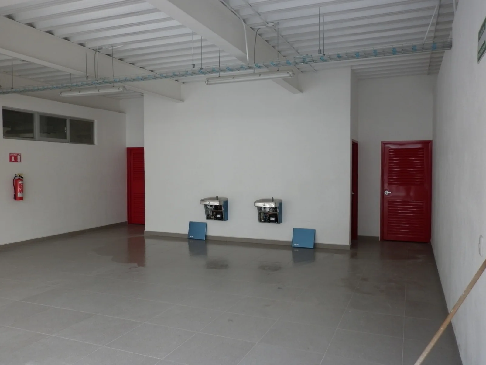
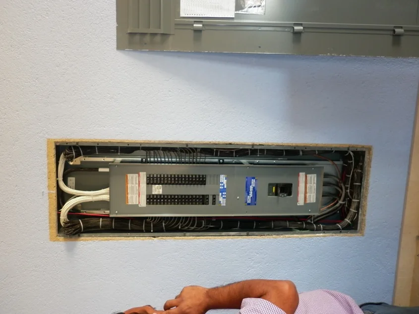
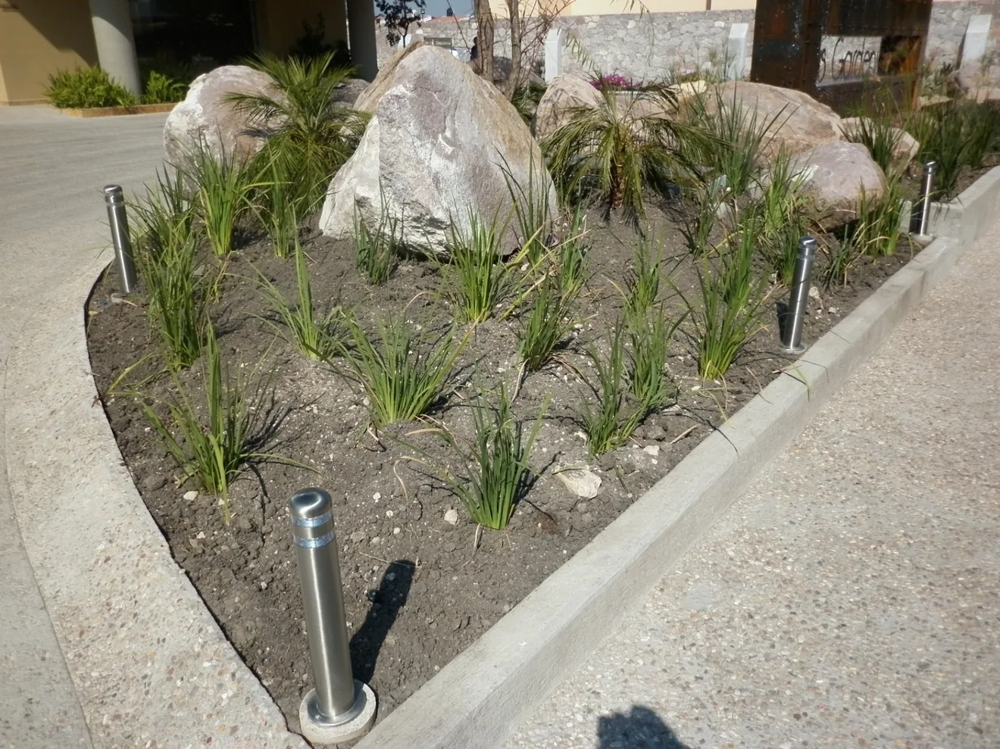

01 / 04
Proyectos eléctricos
Elaboración y desarrollo de proyectos para instalaciones eléctricas en baja y media tensión.
Consultar servicioProyectos eléctricos y ejecución de obra en los sectores residencial, comercial e industrial. Soluciones técnicas para instalaciones de baja y media tensión.

En PRESCO desarrollamos proyectos eléctricos y ejecutamos instalaciones para los sectores residencial, comercial e industrial.
Acompañamos a nuestros clientes desde la planeación y el diseño hasta la ejecución de los trabajos y la gestión de trámites relacionados con el suministro de energía eléctrica.
Trabajamos con atención a los requerimientos de cada proyecto y a los lineamientos técnicos y normativos aplicables.
Conoce nuestra experienciaIntegramos planeación, asesoría y ejecución para responder a las necesidades técnicas de cada obra.
Elaboración y desarrollo de proyectos para instalaciones eléctricas en baja y media tensión.
Consultar servicioInstalación y construcción de infraestructura eléctrica para espacios residenciales, comerciales e industriales.
Consultar servicioRespaldo especializado para evaluar necesidades, planear instalaciones y tomar decisiones informadas.
Consultar servicioAcompañamiento en trámites para la contratación y puesta en servicio del suministro eléctrico.
Consultar servicioSoluciones desarrolladas según las necesidades y condiciones de cada obra.
Comunicación cercana para apoyar las decisiones de cada cliente.
Trabajo orientado a instalaciones funcionales y requerimientos normativos.
Hemos participado en el desarrollo de proyectos eléctricos en diferentes estados del país, adaptando cada propuesta a los requerimientos particulares de su ubicación.
Principalmente en Querétaro y su zona metropolitana, con trabajos en Corregidora, El Marqués y Amealco.

Una selección de fotografías de instalaciones, obra e infraestructura compartidas por PRESCO.




Ya sea un proyecto nuevo, una instalación eléctrica o una consulta técnica, podemos revisar tus necesidades y conversar sobre los siguientes pasos.